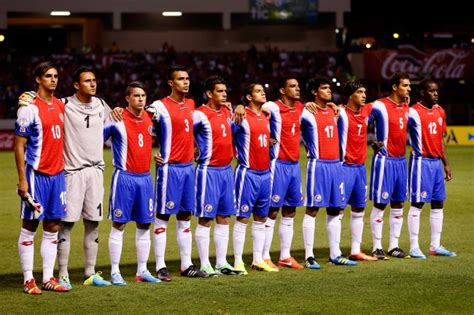

A Costa Rica tenta sua sexta Copa do Mundo. Disputou em 1990, 2002, 2006, 2014 e 2018.
A Costa Rica já foi campeã da CONCACAF três vezes (1963, 1969, 1989) e levou a Copa das Nações UNCAF oito vezes.
| Data/Hora | Estádio | Adversário |
|---|---|---|
| 23 nov 2022 / 13h00 | Estádio Al Thumama | Espanha |
| 27 nov 2022 / 07h00 | Estádio Ahmad bin Ali | Japão |
| 1 dez 2022 / 16h00 | Estádio Al Bayt | Alemanha |